Goal Capital
Investigación y diseño UX para optimizar conversión de leads en una firma de asesoría financiera
Resultado del proyecto
Goal Capital es una firma con una trayectoria y reputación reconocida a nivel internacional: con asesores especializados y clientes que llegaban principalmente por recomendación. El reto era trasladar us identidad y esa misma confianza en la web y convertirla en una experiencia de acompañar al cliente.
El rediseño transformó un sitio que solo informaba en una experiencia clara cercana. Durante la validación, los participantes completaron con éxito las tareas propuestas, incluyendo el flujo más crítico: agendar una asesoría, el punto donde anteriormente se concentraba la mayor fricción.

Mi Rol
Diseñador UX/UI — investigación, definición, arquitectura de información, diseño de flujo, UI, y maquetación web
Equipo
Fui el único diseñador UX/UI
Cliente
Goal Capital (firma de asesoría financiera)
Timeline
Diseño Desktop & Mobile: 4 semanas + Maquetación front-end: 5 semanas
El Problema
Un potencial cliente busca asesoría de inversión, encuentra Goal Capital, y entra a su web esperando encontrar la misma solidez que la firma tiene en el mercado. Pero la web no comunica esa trayectoria — la navegación es confusa, las herramientas de simulación se sienten como formularios largos, y el camino hacia hablar con un asesor no es evidente.
El resultado: la mayoría de los clientes reales llegan por recomendación o marketplaces externos, no por la web — la firma tiene reputación offline, pero su experiencia digital no la sostiene.
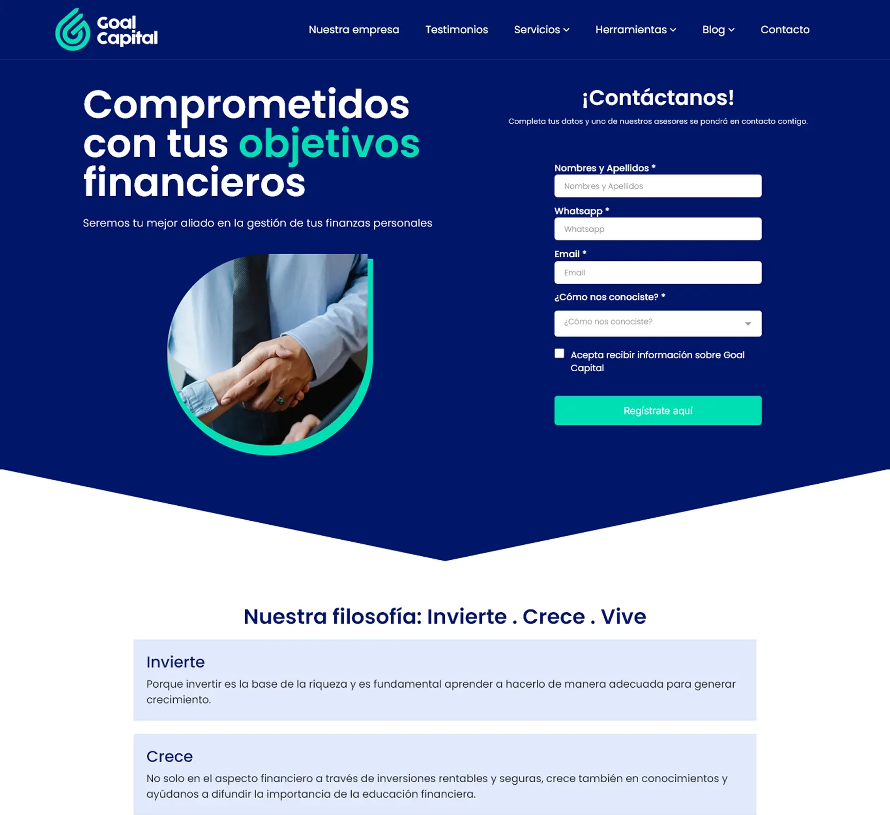
La página principal mostraba una estructura rígida y poco jerárquica, con un formulario protagonista pero sin un mensaje claro de valor para el usuario.
Aunque comunicaba seriedad, la información estaba fragmentada y repetitiva, lo que dificultaba entender qué ofrecía realmente la firma y cómo iniciar contacto.
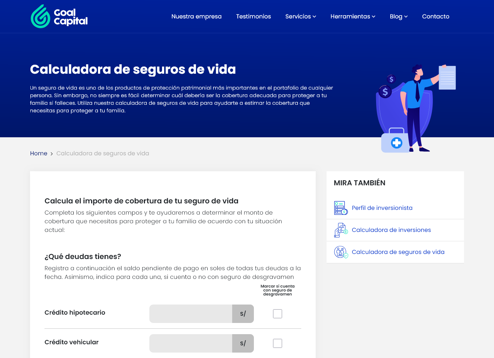
La herramienta presentaba una estructura plana y poco jerárquica, con campos alineados horizontalmente que dificultaban la lectura y el flujo visual.
Los elementos interactivos, como los checkboxes, estaban mal ubicados y carecían de orientación clara, lo que generaba confusión en el usuario. El diseño no guiaba el proceso ni transmitía sensación de asistencia, provocando que la experiencia se sintiera más como llenar un formulario que como una herramienta útil y confiable.
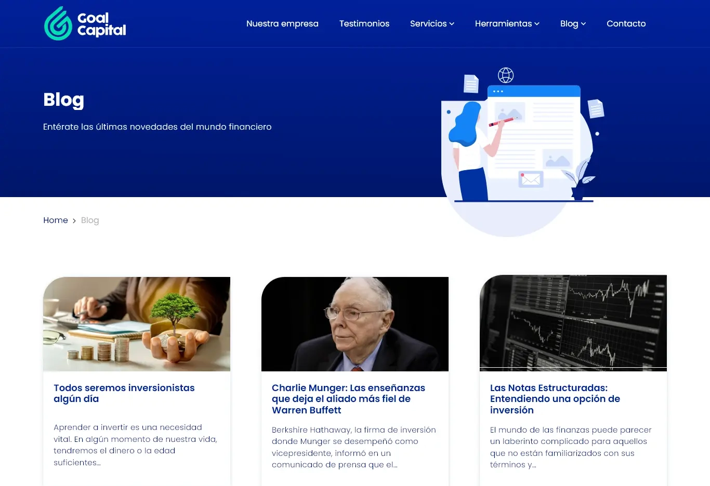
La sección del blog mostraba artículos sin una estructura clara ni categorías definidas. Aunque el contenido era relevante, carecía de organización y jerarquía visual, lo que dificultaba al usuario encontrar temas de interés o relacionarlos con los servicios de la firma.
Resumen del problema:
El sitio no estaba diseñado con foco en el usuario: no generaba leads ni comunicaba con claridad el valor de los servicios financieros — dejando una brecha entre el posicionamiento real de la firma y su experiencia digital.
Componentes del problema:
- ✦ Desalineación de marca: la web no refleja la autoridad ni trayectoria que la firma sí tiene offline.
- ✦ Servicios sin claridad de valor: la información sobre protección patrimonial y asesoría de inversión era limitada, dificultando que el usuario entendiera el diferencial.
- ✦ Contenido desaprovechado: artículos, podcast y eventos existían, pero sin una narrativa que conectara educación financiera con conversión.
- ✦ Herramientas de alto potencial, baja efectividad: las calculadoras podían ser el puente directo a un lead, pero su estructura poco intuitiva generaba fricción.
- ✦ Fricción en el contacto: el flujo de agendamiento no motivaba a la acción.
Impacto por nivel:
-
✦ Usuario:
No llega directo a la web para buscar asesoría — mayormente no tiene información concreta ni sabe cómo buscarla dentro del sitio. -
✦ Negocio:
Las consultas por WhatsApp se perdían por falta de un flujo estructurado; había clientes que no llegaban a conocer la profundidad real del servicio. -
✦ Marca:
La web no comunicaba quiénes son, qué los diferencia, ni la continuidad del servicio más allá de la asesoría puntual.
Investigación
Se combinó investigación desktop (análisis de mercado sobre generación de leads en firmas de asesoría financiera) con entrevistas a los socios de Goal Capital y usuarios.
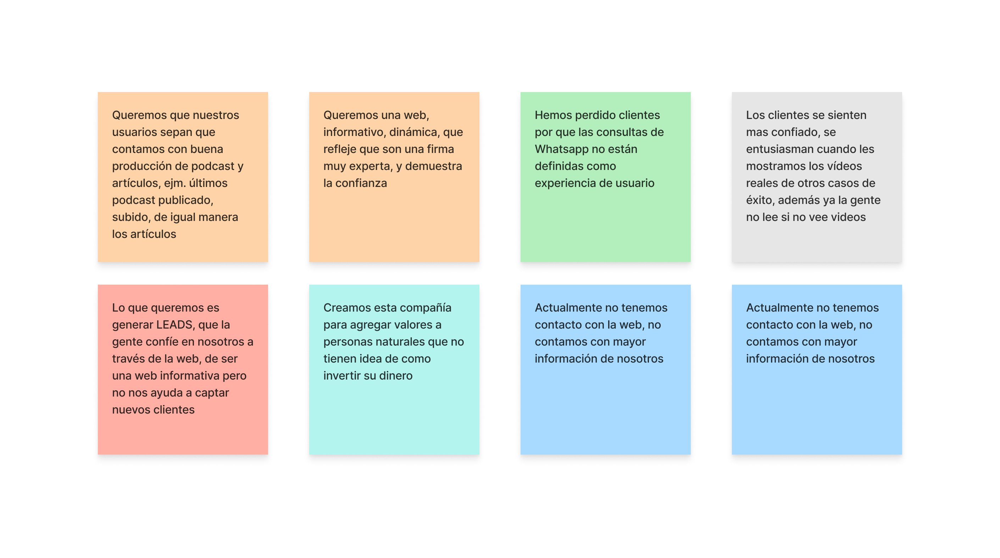
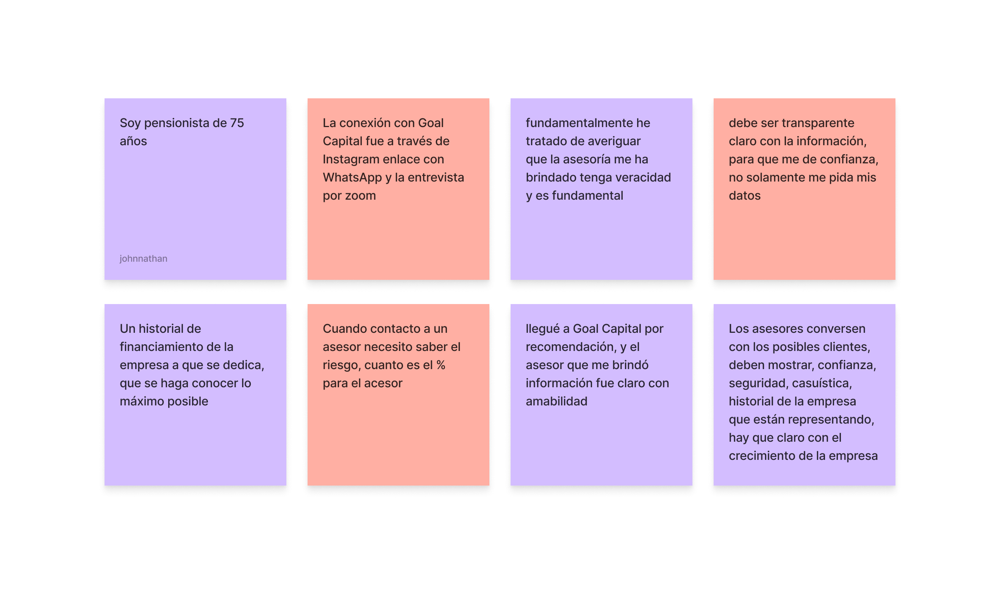
Qué exploré
- ✦ Cómo firmas de asesoría financiera generan y convierten leads.
- ✦ Qué hace que un usuario abandone el proceso de contacto.
- ✦ Qué esperaban los socios de la web.
- ✦ Qué esperaban los usuarios al buscar asesoría financiera.
Qué encontré
- ✦ Los usuarios eligen informarse antes de dejar sus datos.
- ✦ Formulario poco claro que genera abandono; la confianza visual y la usabilidad impactan directamente la conversión.
- ✦ Que refleje su trayectoria y reputación profesional, actualmente los clientes llegan por canales externos, no por la web.
- ✦ Transparencia, credibilidad, testimonios reales y contacto directo con un asesor.
Insights
- I1: Los usuarios sienten desconfianza al no entender con claridad los servicios financieros ofrecidos.
- I2: Los usuarios abandonan el formulario de asesoría por ser extenso y poco guiado.
- I3: Los usuarios usan las herramientas de simulación pero no saben qué hacer con el resultado, falta un siguiente paso claro.
- I4: Los socios quieren mostrar su trayectoria y logros, pero el sitio actual no lo transmite.
Benchmark competitivo
En la entrevista la firma confirmaron en la entrevista inicial que no tienen competencia directa en su segmento. Por eso el benchmark se construyó sobre 3 firmas de asesoría financiera como competencia indirecta: Pristine Capital Group, Aspain11 y Estudioshaddai.
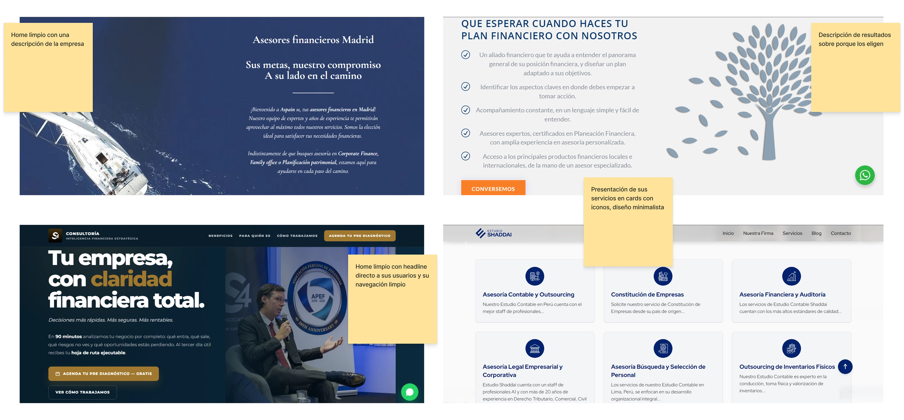
Dónde funcionaron (competencia)
Estudioshaddai — buena arquitectura de información, navegación fácil, blog activo, carga de 1 segundo, 100% responsive.
Pristine Capital Group — buena estructura, información relevante e iterativa, carga rápida (2s), estilo visual coherente.
Dónde fallaba en comparación
Aspain11 — sin estructura clara, navegación poco intuitiva, blog inactivo, baja accesibilidad (no compatible con W3C).
Pristine Capital Group — blog inactivo y contenido desactualizado, pese a tener buena estructura.
Estudioshaddai — algunas secciones visualmente desequilibradas, navegación aún mejorable.
Patrón transversal (oportunidad clara para Goal Capital)
Ninguna de las tres tiene sección de comentarios en su blog, y las tres muestran una interacción "poco viable" en su diseño eso señala de que el sector de asesoría financiera en general subinvierte en interacción y engagement de contenido, no solo en conversión.
User persona


User Journey Map
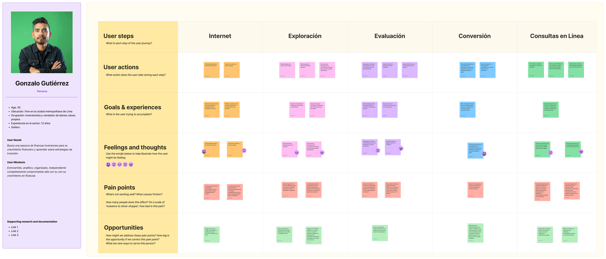
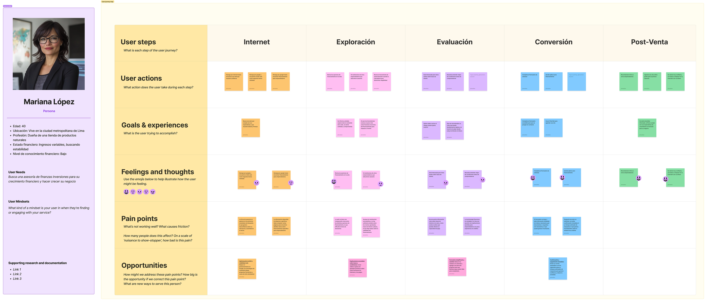
Flujo de usuario
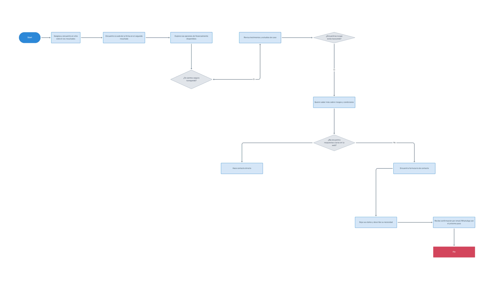
Mapa de Sitio
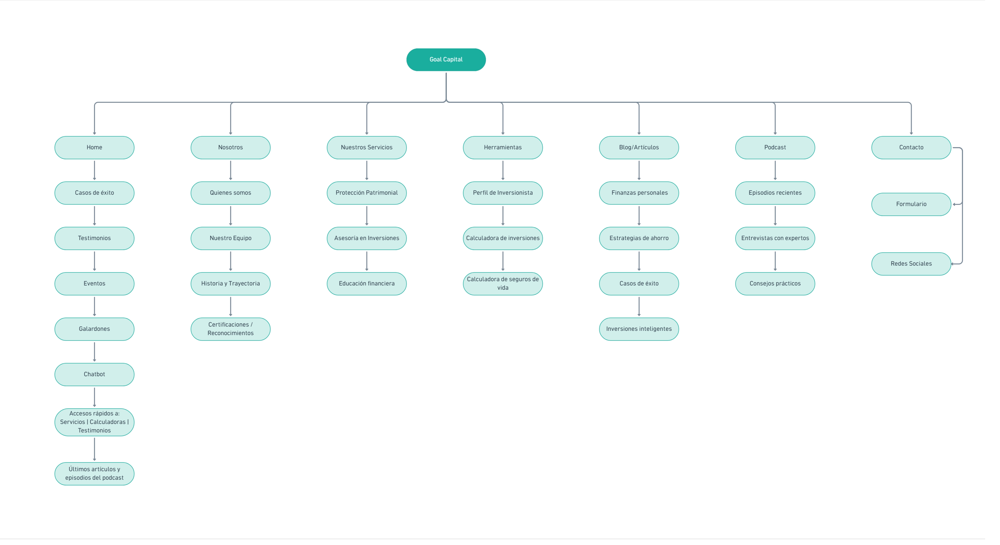
Definición
HMW — ¿Cómo podríamos?
| Insights | POV (Point of View) | ¿Cómo podríamos? (HMW) |
|---|---|---|
| Los usuarios sienten desconfianza al no entender claramente los servicios financieros. | Carlos necesita conocer qué tipo de asesoría ofrece Goal Capital y cómo puede ayudarle a invertir con seguridad. | ¿Cómo podríamos comunicar los servicios financieros de forma clara y visual para generar confianza inmediata? |
| Los usuarios abandonan el formulario de asesoría por ser extenso y poco guiado. | Mariana necesita poder agendar una cita en menos pasos y sentir que hay un asesor disponible para resolver sus dudas. | ¿Cómo podríamos simplificar el flujo de agendamiento rápido y confiable? |
| Los usuarios usan las herramientas financieras pero no saben qué hacer con los resultados. | Andrés necesita entender cómo interpretar los resultados de la calculadora y qué pasos seguir después. | ¿Cómo podríamos conectar los resultados de las herramientas con una acción concreta (agendar asesoría)? |
| Los socios desean reflejar la trayectoria y logros de la firma, pero el sitio actual no lo transmite. | Goal Capital necesita demostrar su trayectoria y diferenciadores para que los usuarios perciban autoridad y seguridad. | ¿Cómo podríamos contar la historia y logros de Goal Capital de forma visual y emocional sin saturar al usuario? |
Wireframes
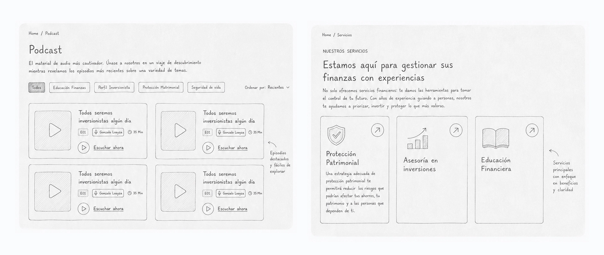
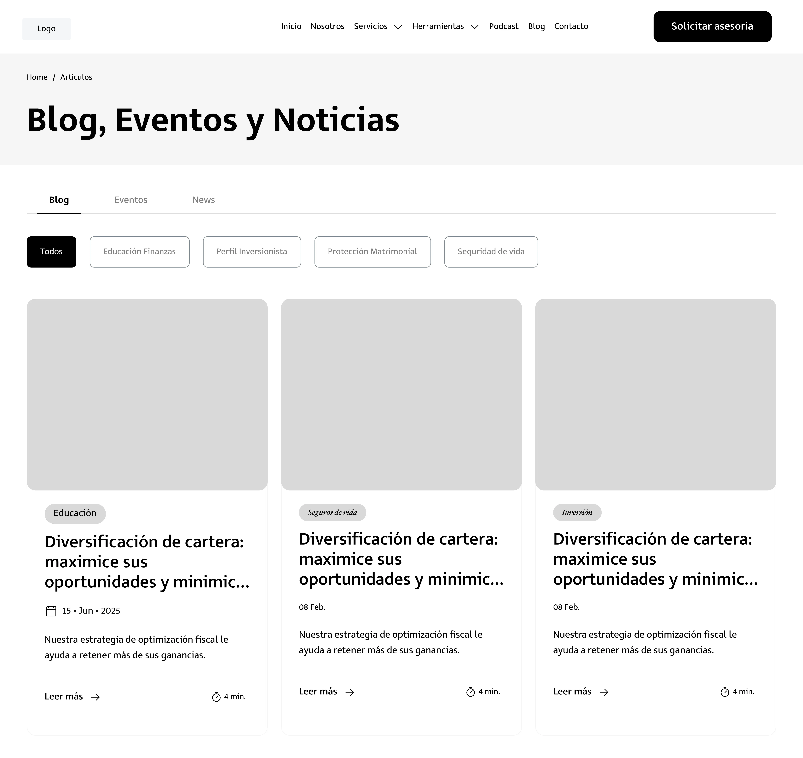
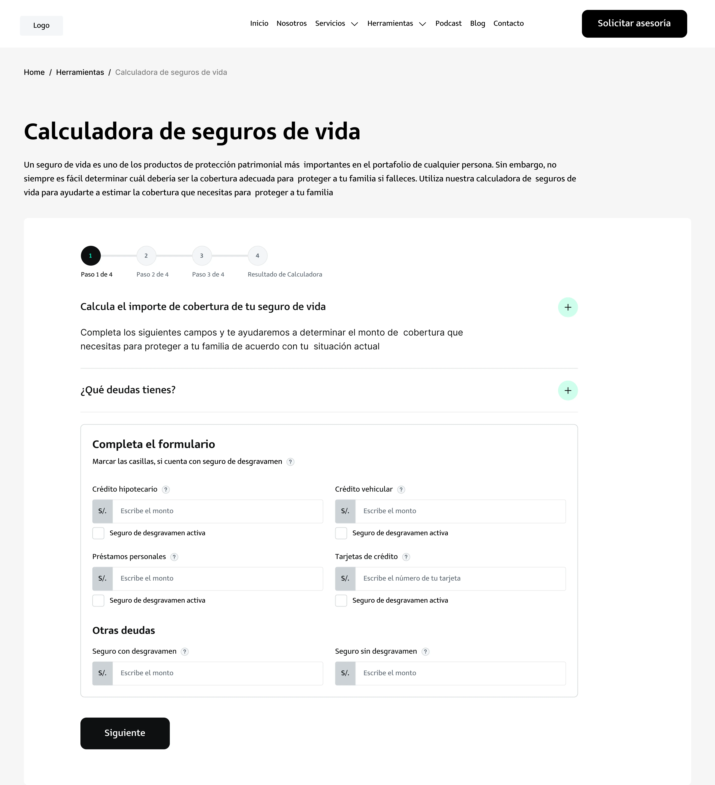
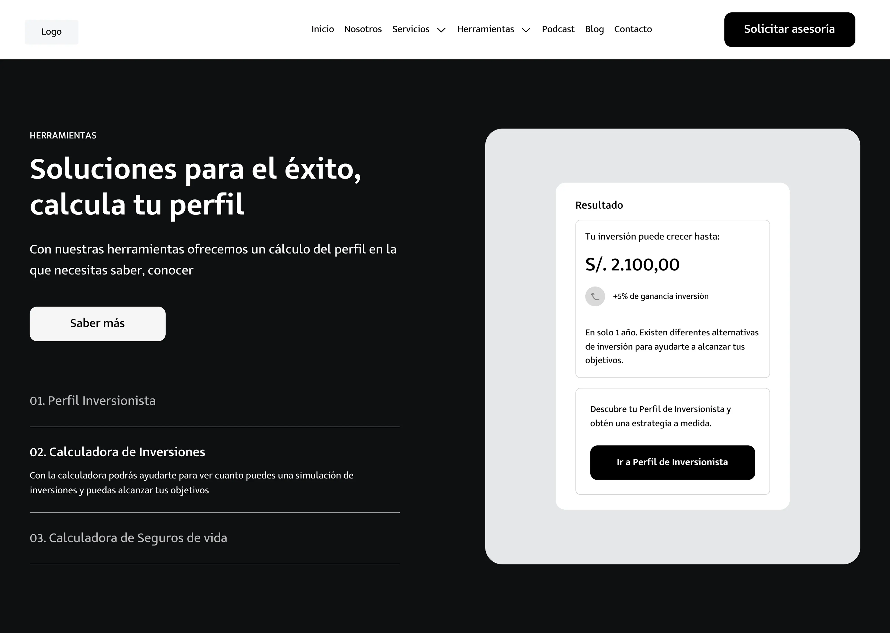
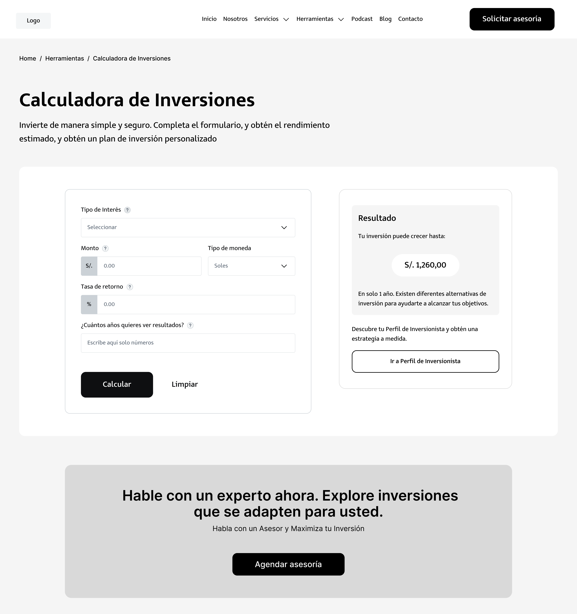
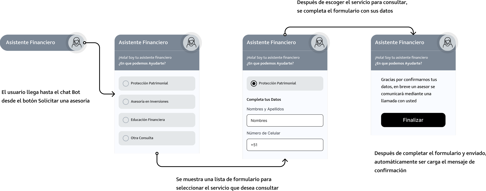
Solución
Decisiones clave de diseño
- ✦ Qué encontramos: Durante la investigación identificamos que el problema no era solo visual. Cada canal funcionaba de forma aislada: las calculadoras entregaban un resultado sin siguiente paso, el formulario de contacto no se sentía parte del mismo flujo que las herramientas, y la información de servicios (Asesoría en Inversiones, Protección Patrimonial) no estaba organizada de forma que comunicara el valor real de cada uno. El benchmark con competencia indirecta confirmó además que todo el sector subinvierte en interacción no es solo un problema, es una oportunidad de diferenciación real.
- ✦ Qué resolvimos: Reorganizamos la arquitectura de información por tipo de servicio, para que cada uno comunique su propio valor en vez de competir por el mismo espacio. Rediseñamos las calculadoras (perfil inversionista, inversiones, seguros de vida) para que cada resultado conecte directamente con una acción concreta — agendar en vez de terminar en un dato suelto. E integramos el agendamiento dentro de un chatbot pensado como asistente financiero, no como un formulario más, centralizando en un solo flujo de 3 pasos lo que antes estaba disperso.
01 — Como usuario que busca asesoría, quiero entender con claridad qué ofrece Goal Capital, para decidir con confianza antes de dejar mis datos.
Antes: información limitada y poco estratégica sobre los servicios.
Después: Con la arquitectura de información reorganizada por tipo de servicio, con jerarquía clara entre Asesoría en Inversiones y Protección Patrimonial.

02 — La calculadora financiera es una herramienta que simula escenarios referenciales según monto, plazo y tasa estimada para apoyar un análisis.
Antes: Las herramientas percibidas como formularios extensos, sin orientación posterior.
Después: Calculadoras rediseñadas (perfil inversionista, calculadora de inversiones y calculadora de seguros de vida) que conectan el resultado directamente con una acción para agendar una asesoría.
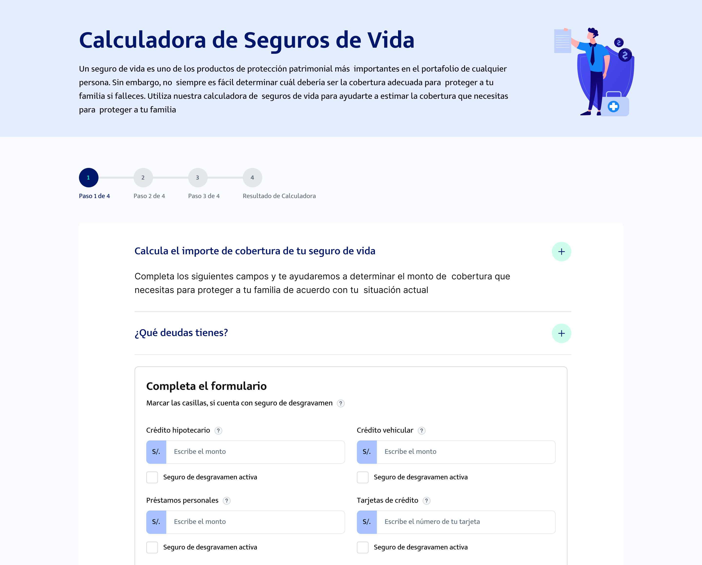
03 — Como usuario listo para hablar con un asesor, quiero un contacto rápido y humano, no un formulario impersonal
Antes: El problema no era la ausencia de un canal de contacto, sino la fricción de la experiencia — los formularios tradicionales generaban abandono justo en el momento de mayor intención.
Después: Un chatbot diseñado como asistente financiero (no como captador de datos), con un flujo de 3 pasos: seleccionar servicio → completar datos básicos → confirmación inmediata que refuerza la seguridad del proceso.

- ✦ Otras decisiones de solución:
- ✦ Navegación optimizada para conectar con un asesor en el menor tiempo posible.
- ✦ CTA visibles para agendar citas gratuitas.
- ✦ Canal de podcast y sección de artículos/noticias con jerarquía por categoría, en vez de un listado plano.
Validación
3 usuarios finales, 3 tareas evaluadas. (Nota: no se conservó el registro detallado de la sesión — las cifras siguientes son el promedio recordado, no un dataset exacto.)
| Tarea | Éxito | Impacto | Recomendación |
|---|---|---|---|
| Encontrar la sección de herramientas y usar la calculadora | 3/3 | Medio | Revisar affordance del input desplegable; validar estado visual del botón "Seleccionado" |
| Interactuar con el chatbot y solicitar asesoría | 3/3 | Medio | Mantener flujo; agregar spinner de carga tras enviar el formulario dentro del chat |
| Agendar asesoría y completar el formulario | 3/3 | Alto | 1 de 3 usuarios demoró unos segundos más en completar esta tarea — revisar el punto de fricción específico antes de dar por cerrada la mejora |
Los 3 participantes completaron las 3 tareas propuestas. La de mayor impacto (agendar asesoría) fue también la única con una demora perceptible en 1 de los 3 usuarios — coherente con haber sido, en el research inicial, el punto de mayor fricción identificado.
- Mejoras implementadas tras el testeo:
- Chatbot: spinner de carga al completar el formulario, con mensaje de confirmación ("su solicitud ha sido enviada"); ajuste de padding en el cuerpo del chat.
- Reducción de espaciado entre secciones.
Guía de Estilos
Color

Tipografía

Espaciado

Grid


Componentes

Diseño Visual


Reflexión
El proyecto fue, antes que nada, la primera vez que trabajamos como dupla de principio a fin. No dividimos tareas por especialidad nos turnamos el research, el benchmark, la definición y el diseño, y cada fase pasó por un debate antes de una decisión.
El reto no fue solo de diseño, fue de investigación: entender patrones de comportamiento digital en un sector salud donde casi no teníamos referencia previa. Buscar hallazgos e insights en un rubro médico significa algo distinto a comparar checkouts o dashboards: hay que entender qué genera confianza en un paciente, qué información necesita ver antes de comprometerse a una cita, y qué tan tolerante es a la fricción cuando el tema no es una compra, sino su salud. Ese aprendizaje leer patrones ya conocidos de UX, pero traducidos a una categoría nueva — fue lo que más nos exigió como equipo.